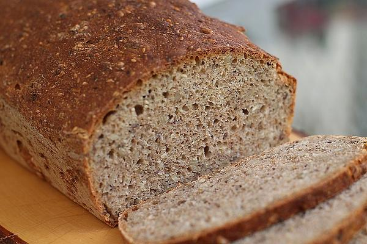

Rene Frank Recipes
Who doesn’t love something sweet at the end of a good meal.
René Frank Recipes exibits the final part of the three course meal (dessert) from great chefs especially Rene Frank.
A dessert is usually sweet and may contain foods such as ice cream, cake, pie, or a beverage. Even coffee at the end of a dinner may be considered a dessert.

René Frank is changing the pastry game. At his dessert restaurant in Berlin, he venerates the vegetable and champions home-made chocolate.
Recently named winner of The World's Best Pastry Chef Award 2022, sponsored by Sosa, the German favours caviar and cabbage over Chantilly cream and salted caramel in his dessert creations.
Check Out A Recipe From René Frank
(René Favorite Bread)

DESCRIPTION
This Recipe is one of the most favourite bread prepared by
René Frank.
INGREDIENTS
- 300 g wholemeal spelled flour
- 300 g spelled flour type 630
- 150 g wheat flour type 550
- 1 pack dry yeast
- 1/2 teaspoon salt
- 75 g sunflower seeds
- 40 g flaxseed
- 40 g sesame seeds
- 0.5 teaspoon 1/2 sugar
- 600 ml water, lukewarm
- Rye flakes, tender or oat flakes
- Flour for the bowl
STEPS
- Mix the dry ingredients, knead with warm water in the food processor for about 5 - 8 minutes. Pour into a large floured bowl, cover with the lid and either let rise slowly overnight in the refrigerator or in a warm water bath or in a warm place until the dough has doubled.
- Let rise again while the oven is preheating to 240 ° C top / bottom heat. If the dough is too soft, knead in rye flakes or oat flakes. Shape into two loaves of bread. It is best to warm the baking sheet on the stove on a low setting. Then place the bread on top, score with a sharp knife and spray with water. Now cover and let rise until the oven is 240 ° C.
- Pour half a cup of water on the bottom of the oven and slide the bread into the oven on the lowest rail. Bake for 10 minutes at 240 ° C top / bottom heat, then reduce the temperature to 190 ° C and finish baking in 50 minutes.
- The recipe makes about 1200 g bread.